本篇介紹搭配 PHPStorm 逐步建立一個基本簡單的 PHP 單元測試練習專案，在使用之前請先安裝 Composer。
建立 PHP 空白專案
首先建立一個空白目錄，使用 Composer 建立一個空白專案。
$ mkdir phpunit-empty
$ cd phpunit-empty
$ composer init接下來出現 composer interaction 介面，一直按下 Enter 即可，完成後出現一個 composer.json 檔案。
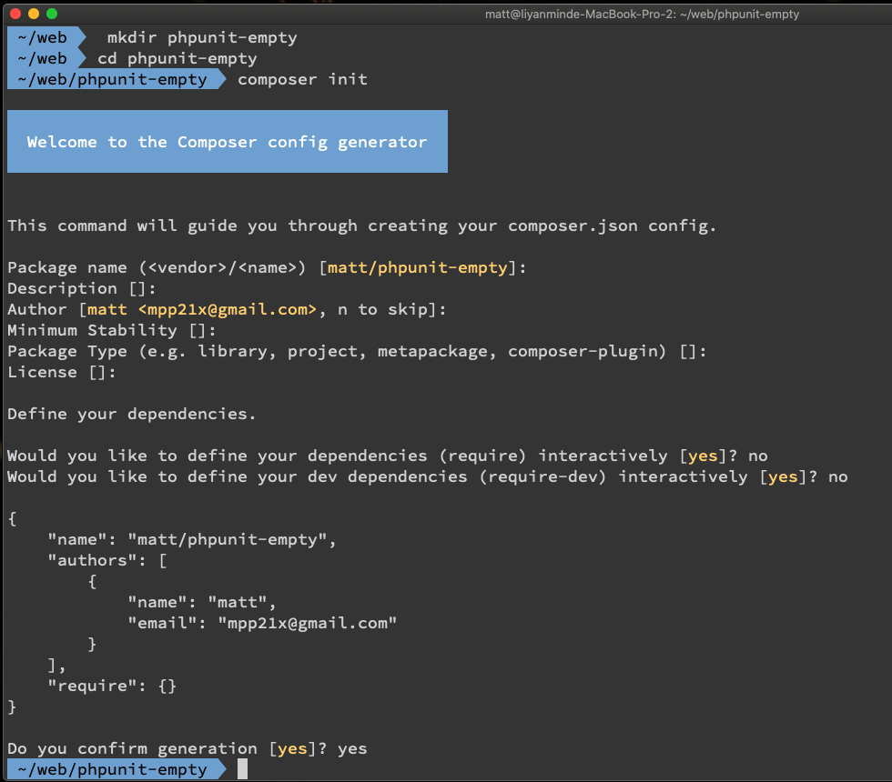
PHPUnit 可以選擇在
Would you like to define your dev dependencies (require-dev) interactively問題出現時，選擇輸入並安裝，但這裡我們先跳過。
安裝 PHPUnit 套件
接下來輸入以下指令安裝 PHPUnit 套件。
$ composer require --dev phpunit/phpunit ^8這裏並沒有選擇安裝最新版本的 PHPUnit ，是因為筆者的 PHPStorm 在最新版本的 PHPUnit 中，有不相容而導致部分相關的快捷鍵無法使用，所以先裝 8 的版本。
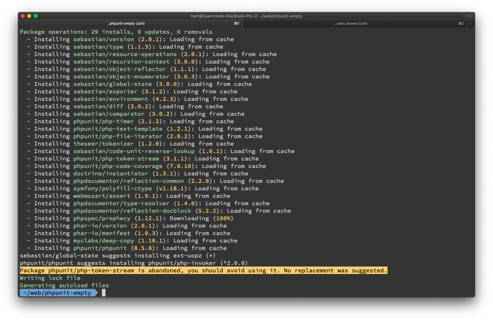
安裝好之後，就會出現一個 vendor 資料夾，也就是我們熟悉的 PHP 函式庫。
設置 PHPStorm
有了 vendor 之後，再來使用 PHPStorm 打開目錄，來設置基本的配置，首先設置 PHP 版本，筆者使用 PHP 的版本是 PHP 7.3，所以這裏設置 7.3。
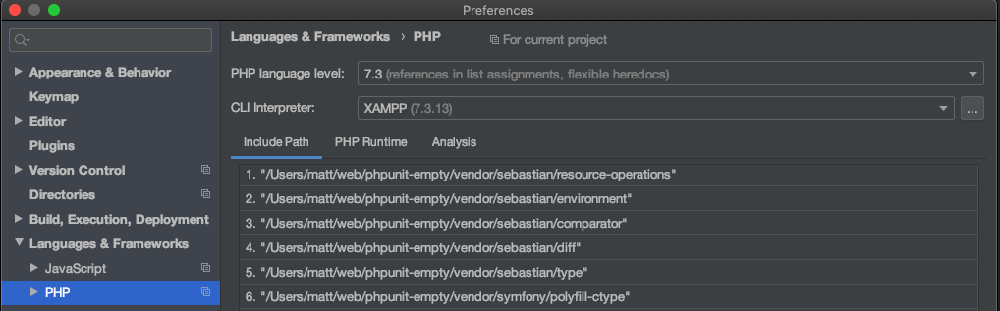
調整專案結構與 PSR-4
有了 vendor 之後，再來是依據 PSR-4 規範，在 composer.json 來設置專案結構。
首先在專案目錄新增兩個資料夾。
src：放置專案中主要邏輯的程式碼。tests：放置專案的測試程式碼。
並在 composer.json 輸入以下的配置來設定 PSR-4 載入路徑，倘若不設置的話，將導致 PHPUnit 執行時，因無法建立測試目標物件 SUT(System Under Test) 而執行失敗。
{
...
"autoload": {
"psr-4": {
"App\\": "src/"
}
},
"autoload-dev": {
"psr-4": {
"Test\\": "tests/"
}
},
...
}最後設定如下所示：
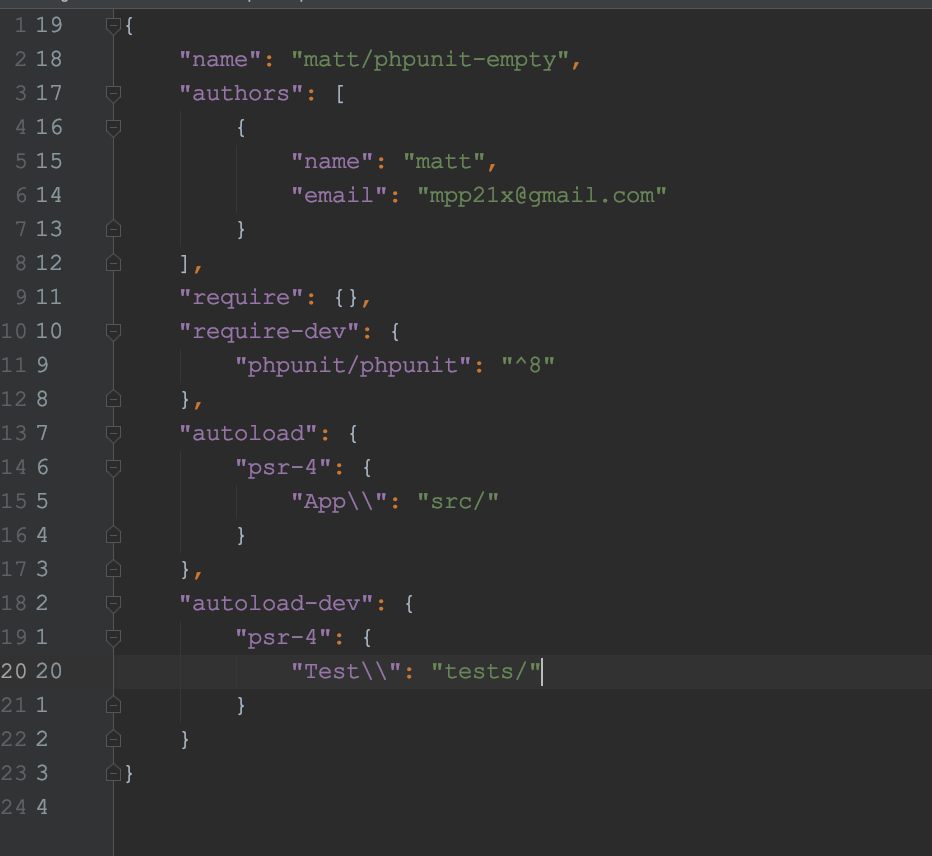
這時候使用 PHPStorm 打開目錄，會看到 src 以及 tests 有不同的顏色。
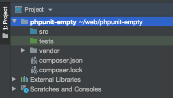
如果沒變的話，可以使用 PHPStorm 手動設定如下：
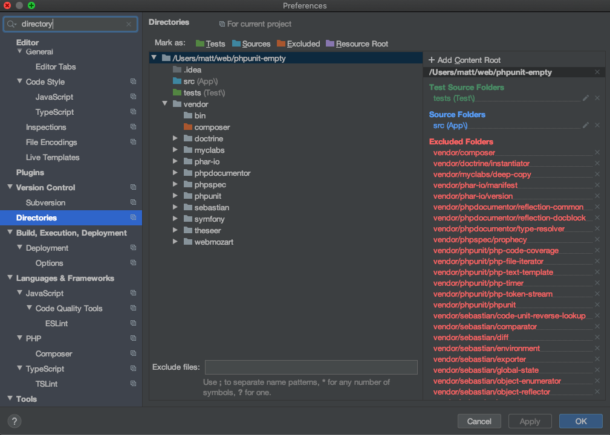
這個設置有助於 PHPStorm 正確解析到各個資料夾的定位，建立 PHP 檔案時也能自動載入對應的 namespace。
設置好之後，使用終端機在專案目錄輸入 composer dump 更新 autoload.php 載入程式碼的路徑，否則待會執行 PHPUnit 時，會找不到程式碼。
撰寫測試程式碼
接下來開始撰寫測試相關的程式碼，使用 PHPStorm 在 src 建立一個 Math 物件。
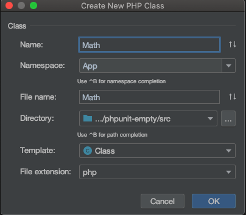
<?php
namespace App;
class Math
{
public function addOne(int $num): int
{
return $num + 1;
}
}
建立好之後，使用 PHPStorm 的 Create New Test 快捷鍵，建立單元測試的程式碼，這裡有兩項要注意：
Test file template必須設置成PHPUnit 6+。Namespace使用Test，底下的Directory也會隨之變成綠色的。
這裏的配置，設置過一次往後建立時就不用再設置了。
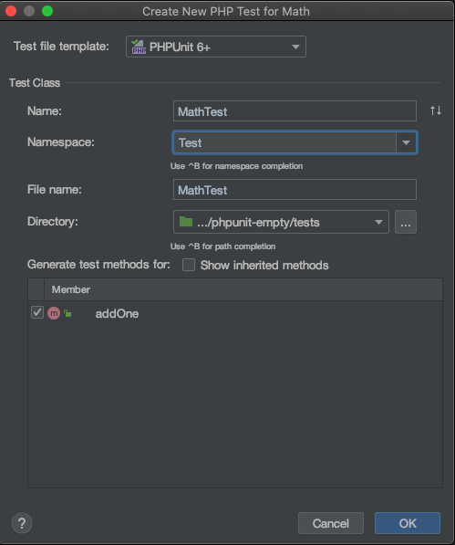
程式碼自動產生如下：
<?php
namespace Test;
use App\Math;
use PHPUnit\Framework\TestCase;
class MathTest extends TestCase
{
public function testAddOne()
{
}
}
之後在 testAddOne 加上以下兩行程式碼。
如果在左側看到綠色箭頭，則代表 PHPStorm 成功識別到這是一個 可執行測試的程式碼，便可以嘗試執行 phpunit 確認結果，如此一來，測試的程式碼都寫好了。
最後輸入以下指令，初始化單元測試專案必備的 phpunit.xml ，這裏一樣是一直按下 Enter 即可。
$ ./vendor/bin/phpunit --generate-configuration最後會看到一個 phpunit.xml 產生，內容如下：
<?xml version="1.0" encoding="UTF-8"?>
<phpunit xmlns:xsi="http://www.w3.org/2001/XMLSchema-instance"
xsi:noNamespaceSchemaLocation="https://schema.phpunit.de/8.5/phpunit.xsd"
bootstrap="vendor/autoload.php"
executionOrder="depends,defects"
forceCoversAnnotation="true"
beStrictAboutCoversAnnotation="true"
beStrictAboutOutputDuringTests="true"
beStrictAboutTodoAnnotatedTests="true"
verbose="true">
<testsuites>
<testsuite name="default">
<directory suffix="Test.php">tests</directory>
</testsuite>
</testsuites>
<filter>
<whitelist processUncoveredFilesFromWhitelist="true">
<directory suffix=".php">src</directory>
</whitelist>
</filter>
</phpunit>執行測試
接下來就可以開始執行測試了，執行測試的方法有 2 種：
- 透過 PHPStorm 快捷鍵執行（只針對當前的 method 或是 class 測試）
- 透過指令執行（根據
phpunit.xml配置進行測試）
透過 PHPStorm 快捷鍵執行
透過 PHPStorm 執行很簡單，點選旁邊的綠色箭頭即可。
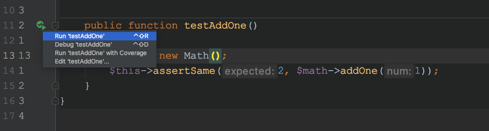
執行結果如下，看到這畫面就代表成功了：
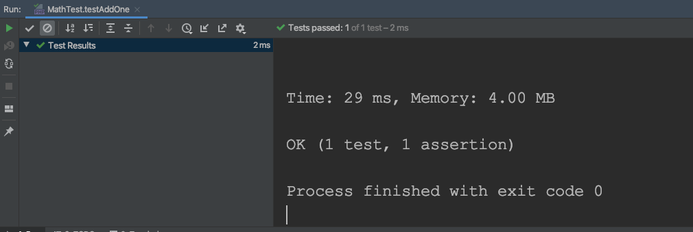
透過指令執行測試
透過指令執行，只要輸入 ./vendor/bin/phpunit，即可看到以下執行結果（必須先建立前面所述的 phpunit.xml）：
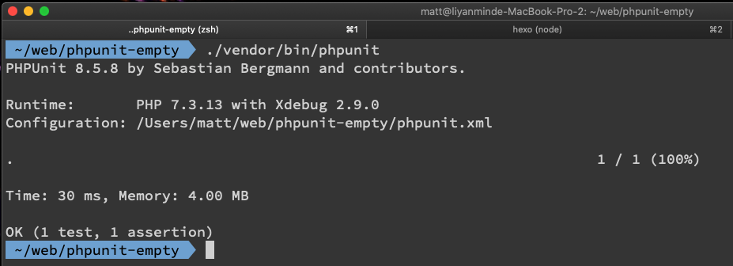
其他
GitHub 紀錄
此專案程式收錄在我的 GitHub 點我連結